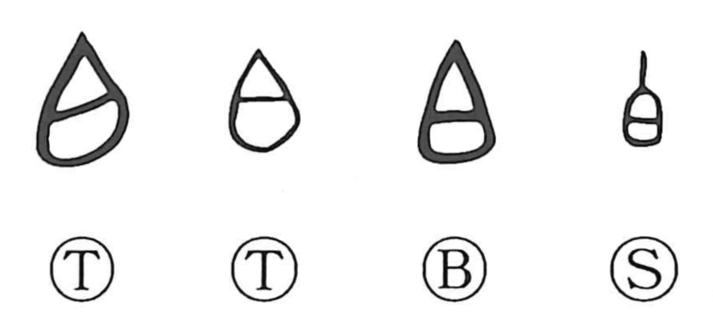

Explanation
白 pictures a human skull, stripped of flesh and bleached by exposure. The pale bone gives the colour white. The early outline presents the head as a whole.
Skulls of powerful leaders or formidable enemies could be preserved. Shang remains include skulls bearing red inscriptions that name leaders of other groups. This practice belongs to the same ritual world as several characters containing 白, including words associated with the display or treatment of heads.
From whiteness come brightness, cleanness, and an unmarked or empty surface. 白 can describe having nothing, including no official rank. Making something clear also gives declaring, reporting, or saying it openly. The movement from a visible colour to clarity connects these familiar uses.